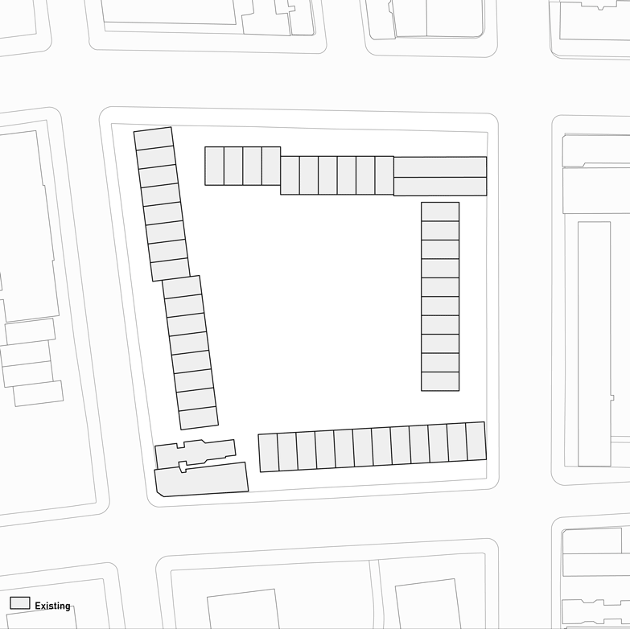
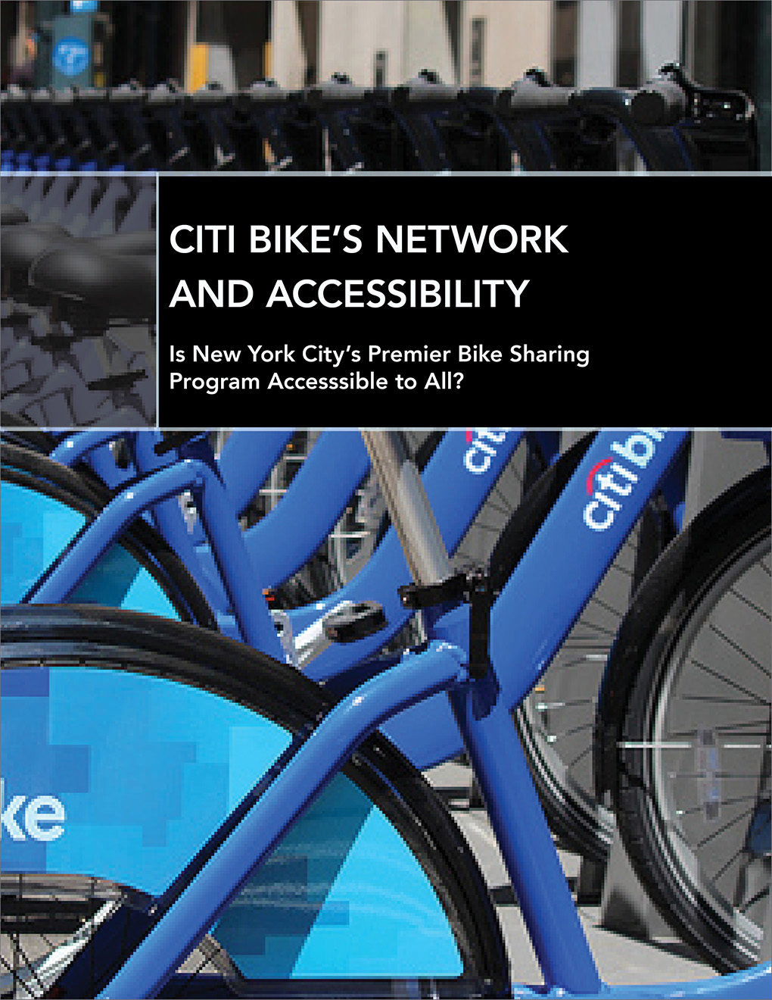

Toggle navigation
Tola Oniyangi
design ,
visualization ,
research + analysis
Projects
About
Can a machine learning model be trained to predict the expansion of cities?
Predicting Urban Sprawl

How can we redevelop a Bronx housing block that maintains traces of existing social, urban and environmental site conditions?
Preserved Traces, Interstitial Spaces
Living in America: Frank Lloyd Wright, Harlem & Modern Housing
Buell Center Exhibition Research Team
What does it mean to express structure externally and generate openness through material and form?
Immersion Library
How can one determine a project’s likely user demographics given its location?
Immersion Library: Analysis of An Urban Condition
Can architecture generate a stronger, more tangible relationship between people and water?
Hydro-habitat
Can light and the absence of it, as well as directionality of planes create distinct spaces with particular qualities?
Processional Planes
How do bodies traverse space, and how does the movement of time complicate this?
Deconstructed Jenga

How accessible is New York City’s Citi Bike network? Who benefits from it? Does accessibility change based on different proximity metrics?
Citi Bike Accessibility
Can the Queens Library System decide where to locate the next library based on demographic and locational factors?
Siting Libraries
City, Theatre, Park
How do Airbnb’s active users, i.e. those who write listings and leave reviews, conceive of New York City’s neighborhoods?
Airbnb Analysis
How can we study the relationship between precolonial Africa and the world through the people themselves?
Global Trajectories: Local Origins
How can we measure a neighborhood’s “vibe” and communicate it to a certain demographic?
Mapping the "Vibe"
This reinvented bridge and gangplank stems from the question: can one smoothen the transition from land to sea?
Blurring Boundaries